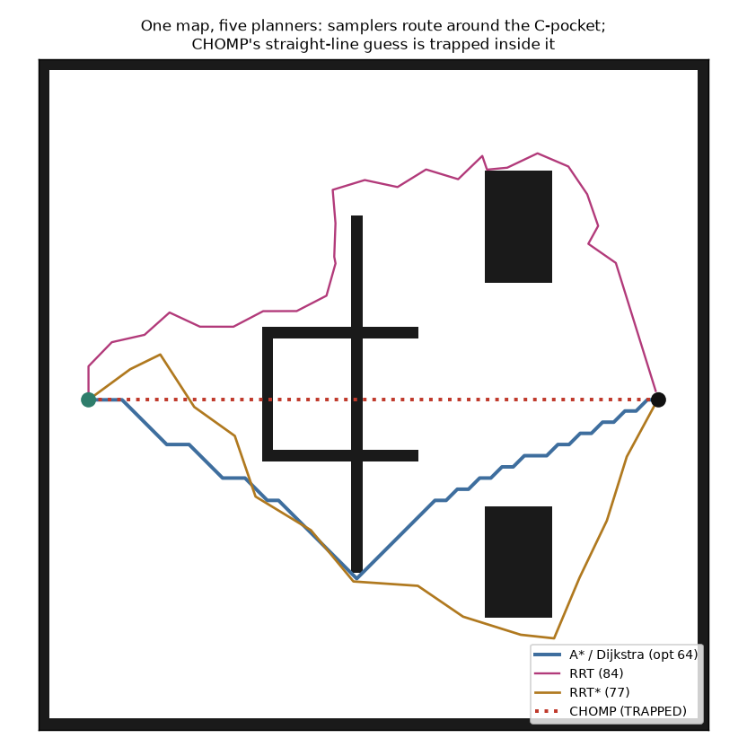

One map with a concave pocket on the direct line, planned five ways — grid search, sampling, and optimization. Each is really run; each shows its family's tradeoff; each links to the 2025 paper that uses it.
The rule: pick the planner family for the job. Grid search (Dijkstra/A*) is optimal and complete but discretised and can expand the whole map; sampling (RRT/RRT*) handles continuous, high-dimensional spaces; optimization (CHOMP) gives the smoothest path but is local — a straight-line guess into a concave pocket gets trapped where the samplers route around.

| method | path length (optimal ≈64) | effort / outcome |
|---|---|---|
| Dijkstra uninformed grid search | 64.3 optimal | 3044 nodes |
| A* heuristic grid search | 64.3 optimal | 1054 nodes (2.9× fewer) |
| RRT sampling-based | 83.6 (+30%) | 149 samples |
| RRT* asymptotically-optimal sampling | 77.4 (+20%) | 109 samples |
| CHOMP trajectory optimization | ✗ trapped in pocket | clearance 0.0 |
Expand the cheapest-so-far grid cell outward until the goal is reached. Complete and optimal on the grid, but it searches in every direction at once.
Finds the optimal grid path (64.3) — but with no sense of where the goal is, it expands 3044 cells, most of the free map.
Dijkstra plus a distance-to-goal heuristic, so the search leans toward the goal — same optimal answer, a fraction of the work.
Same optimal path (64.3) expanding only 1054 cells — 2.9× fewer than Dijkstra.
Grow a tree by drawing random points in the continuous space and connecting the nearest collision-free node — no grid, works in any dimension.
Finds a feasible path fast, but a jagged, sub-optimal one: 83.6, about 30% longer than optimal, and different every run.
RRT that continually rewires the tree to shorter connections, so with more samples the path converges toward optimal.
Cleaner and shorter than plain RRT (77.4, +20%), approaching the optimal path as it samples more.
Start from a guess (here a straight line) and descend a cost of smoothness + obstacle clearance, bending the whole path at once.
On a convex obstacle it gives the smoothest path of all — but here its straight-line guess runs into the concave pocket and the gradient can't climb out: it stays trapped inside the obstacle (min clearance 0.0).
scripts/planner_zoo_experiments.py, pure NumPy) with a concave pocket on the direct line, planned by all five; the figure and numbers come straight from that run. The families answer different questions — is the path optimal, is the space continuous, is the path smooth — and the C-pocket is exactly where an optimizer's locality bites.